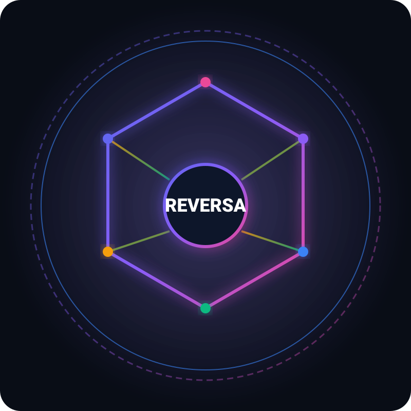

API de Automação de Agentes de IA
Documentação arquitetural e técnica gerada pelo Time Reversa Docs. Sistema de execução de tarefas de IA assíncronas com validação estruturada Pydantic, fila Celery/Redis e persistência PostgreSQL.
Navegação por Artefatos e Módulos
Arquitetura 3D & Componentes
Visualização das camadas do sistema, fluxo de requisições HTTP 202 e isolamento entre API, Broker e Worker.
Mapa de Módulos de Código
Detalhamento de cada arquivo Python do projeto, serviços de orquestração, schemas e banco de dados.
Métricas & Cobertura de Testes
Resultados da suíte de testes pytest, tempos de execução e garantias de resiliência e validação.
Glossário de Conceitos
Definições de termos como Structured Outputs, Loop de Reparo Anti-alucinação, Tenacity, Alembic e Acks Late.
Especificações das Features Implementadas
F001: API Gateway
Endpoints POST /tasks (HTTP 202) e GET /tasks/{task_id} com validação Pydantic e limite de 10 MB.
F002: AI Orchestrator & Validator
Orquestração de agentes de IA com validação de esquema Pydantic e loop de reparo anti-alucinação de 3 tentativas.
F003: Task Queue Broker
Mensageria com Redis e Workers Celery, acks late, limite de tempo e retentativas exponenciais via Tenacity.
F004: PostgreSQL & Docker
Persistência relacional via SQLAlchemy, migrações assíncronas Alembic e orquestração Docker Compose com healthchecks.